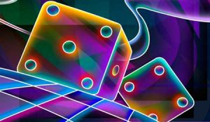

En la retina existen minúsculas células visuales, llamadas fotorreceptoras o receptoras de luz, especializadas en detectar las longitudes de onda procedentes de nuestro entorno (15.000 por milímetro cuadrado).
Estas maravillosas células, recogen las diferentes partes del espectro de luz solar y las transforman en impulsos eléctricos, que son enviados al cerebro a través de los nervios ópticos, siendo éstos los encargados de crear la sensación de color. En la retina humana, existen 2 categorías principales de células fotorreceptoras,encargadas de captar la luz, estas son: los bastones y los conos.
| Bastones | Conos |
|---|---|
| Visión escotópica | Visión fotópica |
| No son sensibles al color | Captan el color |
| Son sensibles a la saturación y el matiz | Captan 3 regiones del espectro luminoso |
Existen tres tipos de conos1: los que responden a las longitudes de onda cercanas al color rojo, otros a las cercanas al verde y un tercero a las longitudes de onda próximas al azul. Según la longitud de onda que incida sobre la retina, se activan los conos en diferente grado.
Si la luz es roja, los que se activarán serán el 100% de los conos que reaccionan ante el rojo. En cambio si la luz es azul, se activarán el 100% de los conos que reaccionan ante el azul. Esta combinación será interpretada en el sistema nervioso como “el color azul”. Por lo tanto, los colores intermedios, con excepción de rojo, verde y azul, se perciben gracias al estímulo simultáneo de dos o más tipos de conos.
Fuente de la información:Teoría del color